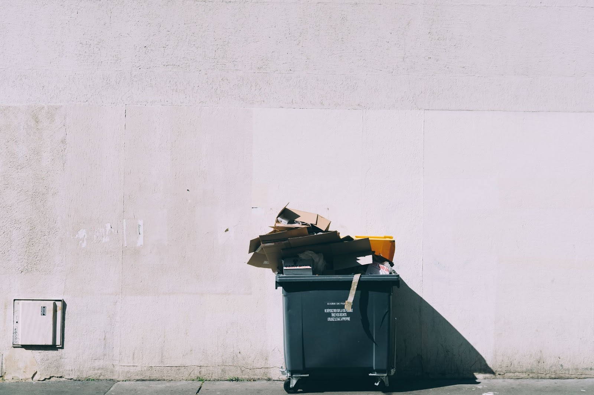

fashion farm '22
How Much Did We Recycle in 2020?
Words: Saamia NasirCategory: Top Picks
Published Date: 18 August 2021
Reduce, Reuse, Recycle! Reduce, Reuse, Recycle! Echoing chants every year on earth day, holding up banners of green earth with the patches of blue and devoting ourselves to the environmental cause. From separating our trash in different coloured bins, encouraging our friends and family to bring their canvas tote bags while doing their daily food shop, to flooding the street demanding action for climate change.
Waste management has always been a topic of conversation; learning recycling and sustainable patterns from a young age have been at the forefront of most of our childhoods. The cause we were taught to fight for with glitter and coloured pens; a little box of activism with the perfect bow hid the grim realities of our contribution to climate change.
All countries strive for economic growth, but what does that mean for our environment?
The World Bank has reported that waste generation is much higher in high-income countries because high income means greater consumption and higher levels of waste. While waste collection and some form of recycling infrastructure are almost certain in upper-middle-income and high-income countries, only less than half of the urban waste is collected in low-income countries. Likewise, there are large disparities in recycling rates in high and low-income countries. As urbanisation and development grow steadfastly, the waste crisis is only going to get worse; the World Bank has estimated that in the upcoming 30 years, global waste is projected to increase by 70%
COVID-19 and the plastic waste problem…
If the climate change situation wasn’t dire already—the onset of the pandemic has brought with it a surge in plastic use, with a spike in discarded single-use plastics such as bottles of sanitisers, masks, gloves and more. Furthermore, with the implementation of lockdowns worldwide, restaurants, even those reducing plastic waste before the pandemic, are not limiting the amount of plastic involved in takeout orders.
“The plastic industry seized on the pandemic as an opportunity to try to convince people that single-use plastic is necessary to keep us safe and that reusables are dirty and dangerous,” said John Hocevar, ocean campaign director at Greenpeace.
Given this spike in plastic use throughout the pandemic, how did the world do when it came to recycling? Germany takes the lead with recycling 68% of its municipal waste; their impressive recycling statistics can be credited to an early awareness of climate change issues and long-standing policies that have embedded recycling into German culture. An average German household has six recycling bins. They are followed closely by Wales with 64% and Singapore with 60% in recycled municipal waste.
Malaysia versus plastic waste
The plastic waste crisis in Malaysia is at the heart of the country’s issues. Following China’s ban on plastic waste imports, Malaysia has become the new dumping ground for developed nations. In addition to this, local authorities have shut down 117 illegal recycling factories; 250 shipping containers of plastic waste were reported to have been illegally imported into the country, although they were allegedly shipped back to their origin. Malaysian import companies with approved permits continue to bring in plastic waste. The government seeks to raise public awareness, strengthen controls on imported foreign waste, close illegal plastic recycling plants, and promote sustainable solid waste management.
This could possibly be equated to the quality, quantity and the form of collection, sorting and recycling differing from state to state across Malaysia. Due to the decentralised nature of waste management systems in Malaysia, the datasets that describe current trends, especially in terms of the percentage of each type of plastics and its generation to end-of-life recycling, cannot be accounted for. While there may be some quantitative assessments, data tends to be based on extrapolation and microscopic case studies, making them unreliable and difficult to generalise.
Are circular economies the solution?
Implementing a circular economy requires a substantial cultural and mindset shift that starts with us. Taking a page out of Germany’s playbook, their recycling policies were implemented as far back as the ’90s, leading them to where they are today. Building a sustainable economy does not happen overnight. The trick is to turn sustainable practices into habits that will need persistence and constant reminders.
One of the main reasons for Malaysia’s waste crisis is the lack of awareness and facilities regarding the plastic waste issue. For us, Beyond Bins is how we choose to tackle the plastic waste crisis. Redirecting plastic waste from landfills and repurposing plastic waste is one of the main ways we strive to do our part for the planet. However, at the heart of our vision is to provide communities with the opportunity to be exposed to innovative solutions when dealing with waste and to be better informed about its environmental implications.
Explore More